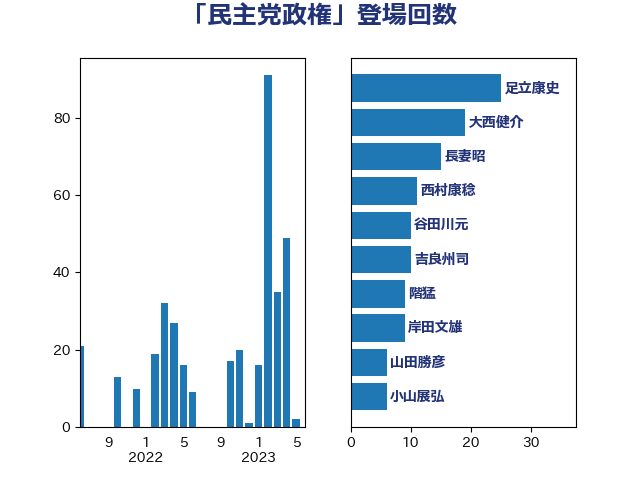

単語「民主党政権」

| 足立康史 | 日本維新の会 | 24 回 |
| 吉良州司 | 無所属 | 8 回 |
| 田村憲久 | 自由民主党 | 8 回 |
| 田村智子 | 日本共産党 | 8 回 |
| 長妻昭 | 立憲民主党 | 7 回 |
| 前原誠司 | 国民民主党 | 6 回 |
| 岸田文雄 | 自由民主党 | 6 回 |
| 階猛 | 立憲民主党 | 6 回 |
| 吉田統彦 | 立憲民主党 | 5 回 |
| 山井和則 | 立憲民主党 | 5 回 |
| 平井卓也 | 自由民主党 | 5 回 |
| 茂木敏充 | 自由民主党 | 5 回 |
| 西村康稔 | 自由民主党 | 5 回 |
| 大西健介 | 立憲民主党 | 4 回 |
| 櫻井周 | 立憲民主党 | 4 回 |
| 牧山ひろえ | 立憲民主党 | 4 回 |
| 玄葉光一郎 | 立憲民主党 | 4 回 |
| 緑川貴士 | 立憲民主党 | 4 回 |
| 若林健太 | 自由民主党 | 4 回 |
| 荒井優 | 立憲民主党 | 4 回 |
| 音喜多駿 | 日本維新の会 | 4 回 |
| 坂本哲志 | 自由民主党 | 3 回 |
| 太栄志 | 立憲民主党 | 3 回 |
| 小沼巧 | 立憲民主党 | 3 回 |
| 岡田克也 | 立憲民主党 | 3 回 |
| 杉尾秀哉 | 立憲民主党 | 3 回 |
| 田名部匡代 | 立憲民主党 | 3 回 |
| 萩生田光一 | 自由民主党 | 3 回 |
| 西田昌司 | 自由民主党 | 3 回 |
| 足立敏之 | 自由民主党 | 3 回 |
| 鈴木俊一 | 自由民主党 | 3 回 |
| 鈴木宗男 | 日本維新の会 | 3 回 |
| 上田清司 | 国民民主党 | 2 回 |
| 井出庸生 | 自由民主党 | 2 回 |
| 勝部賢志 | 立憲民主党 | 2 回 |
| 塩村あやか | 立憲民主党 | 2 回 |
| 宮崎政久 | 自由民主党 | 2 回 |
| 小泉進次郎 | 自由民主党 | 2 回 |
| 徳永久志 | 立憲民主党 | 2 回 |
| 本庄知史 | 立憲民主党 | 2 回 |
| 杉田水脈 | 自由民主党 | 2 回 |
| 林芳正 | 自由民主党 | 2 回 |
| 柚木道義 | 立憲民主党 | 2 回 |
| 森本真治 | 立憲民主党 | 2 回 |
| 浜地雅一 | 公明党 | 2 回 |
| 田嶋要 | 立憲民主党 | 2 回 |
| 石垣のりこ | 立憲民主党 | 2 回 |
| 福山哲郎 | 立憲民主党 | 2 回 |
| 福島伸享 | 無所属 | 2 回 |
| 緒方林太郎 | 無所属 | 2 回 |
| 舟山康江 | 国民民主党 | 2 回 |
| 菊田真紀子 | 立憲民主党 | 2 回 |
| 谷田川元 | 立憲民主党 | 2 回 |
| 近藤和也 | 立憲民主党 | 2 回 |
| 道下大樹 | 立憲民主党 | 2 回 |
| 重徳和彦 | 立憲民主党 | 2 回 |
| 阿部知子 | 立憲民主党 | 2 回 |
| 上川陽子 | 自由民主党 | 1 回 |
| 仁木博文 | 無所属 | 1 回 |
| 今枝宗一郎 | 自由民主党 | 1 回 |
| 伊藤孝恵 | 国民民主党 | 1 回 |
| 務台俊介 | 自由民主党 | 1 回 |
| 原口一博 | 立憲民主党 | 1 回 |
| 古川元久 | 国民民主党 | 1 回 |
| 古賀友一郎 | 自由民主党 | 1 回 |
| 吉川沙織 | 立憲民主党 | 1 回 |
| 国光あやの | 自由民主党 | 1 回 |
| 塩川鉄也 | 日本共産党 | 1 回 |
| 大串博志 | 立憲民主党 | 1 回 |
| 大塚耕平 | 国民民主党 | 1 回 |
| 奥野総一郎 | 立憲民主党 | 1 回 |
| 宮本徹 | 日本共産党 | 1 回 |
| 小山展弘 | 立憲民主党 | 1 回 |
| 小里泰弘 | 自由民主党 | 1 回 |
| 山下雄平 | 自由民主党 | 1 回 |
| 山岸一生 | 立憲民主党 | 1 回 |
| 山本博司 | 公明党 | 1 回 |
| 山田勝彦 | 立憲民主党 | 1 回 |
| 岩谷良平 | 日本維新の会 | 1 回 |
| 平木大作 | 公明党 | 1 回 |
| 後藤茂之 | 自由民主党 | 1 回 |
| 掘井健智 | 日本維新の会 | 1 回 |
| 斉藤鉄夫 | 公明党 | 1 回 |
| 斎藤嘉隆 | 立憲民主党 | 1 回 |
| 有村治子 | 自由民主党 | 1 回 |
| 木村次郎 | 自由民主党 | 1 回 |
| 末松義規 | 立憲民主党 | 1 回 |
| 東徹 | 日本維新の会 | 1 回 |
| 柳ヶ瀬裕文 | 日本維新の会 | 1 回 |
| 櫛渕万里 | れいわ新選組 | 1 回 |
| 江島潔 | 自由民主党 | 1 回 |
| 江田憲司 | 立憲民主党 | 1 回 |
| 泉健太 | 立憲民主党 | 1 回 |
| 渡辺周 | 立憲民主党 | 1 回 |
| 滝波宏文 | 自由民主党 | 1 回 |
| 片山さつき | 自由民主党 | 1 回 |
| 玉木雄一郎 | 国民民主党 | 1 回 |
| 甘利明 | 自由民主党 | 1 回 |
| 石井章 | 日本維新の会 | 1 回 |
| 神谷裕 | 立憲民主党 | 1 回 |
| 篠原孝 | 立憲民主党 | 1 回 |
| 芳賀道也 | 国民民主党 | 1 回 |
| 若松謙維 | 公明党 | 1 回 |
| 藤原崇 | 自由民主党 | 1 回 |
| 藤岡隆雄 | 立憲民主党 | 1 回 |
| 藤田文武 | 日本維新の会 | 1 回 |
| 西銘恒三郎 | 自由民主党 | 1 回 |
| 赤羽一嘉 | 公明党 | 1 回 |
| 辻元清美 | 立憲民主党 | 1 回 |
| 金子恵美 | 立憲民主党 | 1 回 |
| 鈴木敦 | 国民民主党 | 1 回 |
| 青柳仁士 | 日本維新の会 | 1 回 |
| 高市早苗 | 自由民主党 | 1 回 |
| 高村正大 | 自由民主党 | 1 回 |
| 高橋千鶴子 | 日本共産党 | 1 回 |